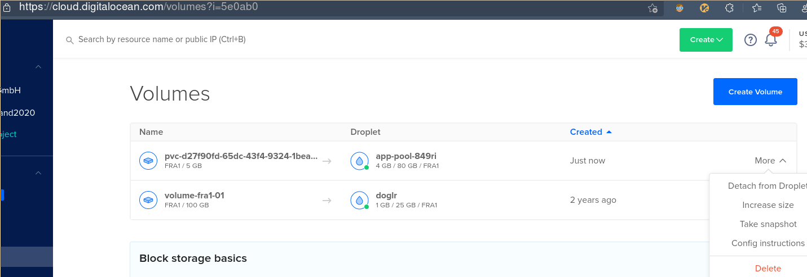
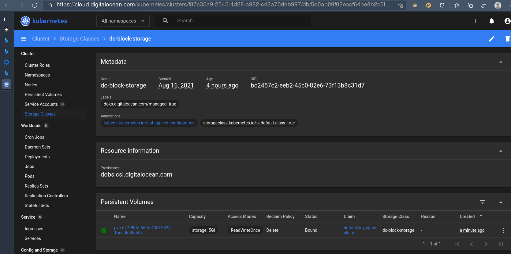

Stateful App With MySQL Database¤
Lets connect a database to our hello app, i.e. we need a Stateful Set.
Requirements¤
We require the app from last chapter:
$ git ls-files # lp: asserts=server.py
$ git tag
$ sed -i 's/0.2/0.3/' environ # version now 0.3
$ source ./environ
$ rm -f *.yaml
$ git ls-files
Dockerfile
environ
server.py
$ git tag
0.2
0.3
$ sed -i 's/0.2/0.3/' environ # version now 0.3
$
$ source ./environ
$ rm -f *.yaml
Server App¤
First we need a mysql server:
$ ( p images | grep mysql | grep 5.7 || p pull docker.io/library/mysql:5.7 )
$ p run -d -e MYSQL_ROOT_HOST='%' -e MYSQL_ROOT_PASSWORD=secret -e MYSQL_DATABASE=db -p3306:3306 --rm -ti mysql:5.7
$ ( p images | grep mysql | grep 5.7 || p pull docker.io/library/mysql:5.7 )
docker.io/library/mysql [1m[31m5.7[0m[39m[49m 8cf62[1m[31m507[0m[39m[49m0931 3 weeks ago 454 MB
$ p run -d -e MYSQL_ROOT_HOST='%' -e MYSQL_ROOT_PASSWORD=secret -e MYSQL_DATABASE=db -p3306:3306 --rm -ti mysql:5.7
ae4eebc46b6fd78074d9586f68a1e891f58d2a1a951a90bcfdb404458a12e975
The app is simple webserver, now with database support plus a real app server framework:
$ cat server.py
#!/usr/bin/env python
import os, sys, time, bottle, bottle_mysql, json as j
app = bottle.Bottle()
dbconf = {k: os.environ[k] for k in ('dbuser', 'dbpass', 'dbname', 'dbhost')}
plugin = bottle_mysql.Plugin(**dict(dbconf))
app.install(plugin)
now, die = time.time, sys.exit
@app.route('/initdb')
def initdb(db):
db.execute('drop TABLE IF EXISTS items')
db.execute('CREATE TABLE items (name varchar(255), age int)')
db.execute("INSERT INTO items (name, age) VALUES ('brian', 42)")
db.execute('show tables')
row = db.fetchone()
return {'result': str(row)}
@app.route('/show/<item>')
def show(item, db):
db.execute('SELECT * from items where name=%s', (item,))
row = db.fetchone()
if row:
return {'result': row}
return bottle.HTTPError(404, 'Item not found')
@app.route('/env', method='GET')
def env():
return {'at': now(), 'env': dict(os.environ)}
@app.route('/kill/<ec>')
def kill(ec):
sys.stderr.close()
die(int(ec))
if __name__ == '__main__':
print(f'Starting bottle httpd server')
bottle.run(app, host='0.0.0.0', port=28001)
Containerize¤
$ cat Dockerfile
FROM python:3.8
MAINTAINER gk
RUN mkdir -p /app
RUN pip install mysql bottle bottle-mysql
WORKDIR /app
COPY server.py /app/server.py
ENV APP_ENV development
EXPOSE 28001
CMD ["python", "server.py"]
$ p rmi -f $namespace/$app
$ p build --quiet -t $app .
$ p tag "$app:latest" "$namespace/$app:$ver"
$ p rmi -f $namespace/$app
Untagged: localhost/devapps/hello_app:0.3
$ p build --quiet -t $app .
603b3f682f1e101453ca517ab5bd9f9d45a60b7825f80ff21df899abc91c5f84
$ p tag "$app:latest" "$namespace/$app:$ver"
Test¤
$ hostip="$(ip addr show |grep 'inet ' | grep -v 127 | head -n 1 | cut -d t -f2 | cut -db -f1 | cut -d'/' -f1 | xargs)"
$ echo $hostip
10.0.0.84
$ p run -d -ti --rm -p 28001:28001 -e dbuser=root -e dbpass=secret -e dbname=db -e dbhost=$hostip $namespace/$app:$ver
6b28f15292eefdc92fda8c1bee52207c47299a4958f42b72bef717309fb140af
$ ( while true; do sleep 1; wget -q http://127.0.0.1:28001/initdb -O - && break; done )
{"result": "{'Tables_in_db': 'items'}"}
wget -q http://127.0.0.1:28001/show/brian -O - | jq . # lp: asserts=brian and result
$ wget -q http://127.0.0.1:28001/show/brian -O - | jq .
[1m{[0m[39m[49m
[1m [34m"result"[39m: {[0m[39m[49m
[1m [34m"name"[39m: [0m[32m[49m"brian"[1m[39m,[0m[39m[49m
[1m [34m"age"[39m: [0m[39m[49m42
[1m }[0m[39m[49m
[1m}[0m[39m[49m
Note
The app container needed to connect to an ip different to 127.0.0.1 (mysql binds to 0.0.0.0 but
127.0.0.1 within the app container is within its own network namespace).
Cleanup:
$ wget -q http://127.0.0.1:28001/kill/0
$ ( p ps | grep mysqld | cut -d' ' -f1 | xargs podman stop; echo stopped ) # lp: asserts=stopped
$ wget -q http://127.0.0.1:28001/kill/0
$ ( p ps | grep mysqld | cut -d' ' -f1 | xargs podman stop; echo stopped )
ae4eebc46b6f
stopped
Commit¤
$ git commit -am 'feat: mysql connection'
$ git tag $ver
$ git commit -am 'feat: mysql connection'
On branch master
Untracked files:
(use "git add <file>..." to include in what will be committed)
[31menv[39m
nothing added to commit but untracked files present (use "git add" to track)
$ git tag $ver
fatal: tag '0.3' already exists
Push¤
$ p login "$(pass show reg/domain)" -u $(pass show reg/user) -p "$(pass show reg/passw)"
$ r="docker://$(pass show reg/domain)/docker-internal/$namespace"
$ p push --quiet --authfile=$fn_reg_auth $namespace/$app:$ver "$r/$app:$ver" && echo success # lp: assert=success
$ p login "$(pass show reg/domain)" -u $(pass show reg/user) -p "$(pass show reg/passw)"
Login Succeeded!
$ r="docker://$(pass show reg/domain)/docker-internal/$namespace"
$ p push --quiet --authfile=$fn_reg_auth $namespace/$app:$ver "$r/$app:$ver" && echo success
success
Cloud Deployment¤
Note
We follow this tutorial, modified for our app.
Again we deploy the app using K8s' solely. First a secret "generator", configured for a static one (but you could have varying ones at every redeploy):
$ cat <<EOF >./kustomization.yaml
secretGenerator:
- name: mysql-pass
literals:
- password=myk8ssecret
resources:
- mysql-deployment.yaml
- hello2-deployment.yaml
EOF
$ cat <<EOF >./kustomization.yaml
> secretGenerator:
> - name: mysql-pass
> literals:
> - password=myk8ssecret
> resources:
> - mysql-deployment.yaml
> - hello2-deployment.yaml
> EOF
$
$ cat <<EOF >./mysql-deployment.yaml
apiVersion: v1
kind: Service
metadata:
name: hello2-mysql
labels:
app: hello2
spec:
ports:
- port: 3306
selector:
app: hello2
tier: mysql
clusterIP: None
---
apiVersion: v1
kind: PersistentVolumeClaim
metadata:
name: mysql-pv-claim
labels:
app: hello2
spec:
accessModes:
- ReadWriteOnce
resources:
requests:
storage: 5Gi
---
apiVersion: apps/v1
kind: Deployment
metadata:
name: hello2-mysql
labels:
app: hello2
spec:
selector:
matchLabels:
app: hello2
tier: mysql
strategy:
type: Recreate
template:
metadata:
labels:
app: hello2
tier: mysql
spec:
containers:
- image: mysql:5.7
name: mysql
args:
- "--ignore-db-dir=lost+found"
env:
- name: MYSQL_ROOT_HOST
value: "%"
- name: MYSQL_DATABASE
value: "db"
- name: MYSQL_ROOT_PASSWORD
valueFrom:
secretKeyRef:
name: mysql-pass
key: password
ports:
- containerPort: 3306
name: mysql
volumeMounts:
- name: mysql-persistent-storage
mountPath: /var/lib/mysql
volumes:
- name: mysql-persistent-storage
persistentVolumeClaim:
claimName: mysql-pv-claim
EOF
$ cat <<EOF >./mysql-deployment.yaml
> apiVersion: v1
> kind: Service
> metadata:
> name: hello2-mysql
> labels:
> app: hello2
> spec:
> ports:
> - port: 3306
> selector:
> app: hello2
> tier: mysql
> clusterIP: None
> ---
> apiVersion: v1
> kind: PersistentVolumeClaim
> metadata:
> name: mysql-pv-claim
> labels:
> app: hello2
> spec:
> accessModes:
> - ReadWriteOnce
> resources:
> requests:
> storage: 5Gi
> ---
> apiVersion: apps/v1
> kind: Deployment
> metadata:
> name: hello2-mysql
> labels:
> app: hello2
> spec:
> selector:
> matchLabels:
> app: hello2
> tier: mysql
> strategy:
> type: Recreate
> template:
> metadata:
> labels:
> app: hello2
> tier: mysql
> spec:
> containers:
> - image: mysql:5.7
> name: mysql
> args:
> - "--ignore-db-dir=lost+found"
> env:
> - name: MYSQL_ROOT_HOST
> value: "%"
> - name: MYSQL_DATABASE
> value: "db"
> - name: MYSQL_ROOT_PASSWORD
> valueFrom:
> secretKeyRef:
> name: mysql-pass
> key: password
> ports:
> - containerPort: 3306
> name: mysql
> volumeMounts:
> - name: mysql-persistent-storage
> mountPath: /var/lib/mysql
> volumes:
> - name: mysql-persistent-storage
> persistentVolumeClaim:
> claimName: mysql-pv-claim
> EOF
$
ignore-db-dir start argument
On ext4 the mysql5.7 images refuses to start due to non empty dir otherwise.
$ cat <<EOF >./hello2-deployment.yaml
apiVersion: v1
kind: Service
metadata:
name: hello2
labels:
app: hello2
tier: frontend
spec:
type: LoadBalancer
ports:
- port: 28001
selector:
app: hello2
tier: frontend
---
apiVersion: apps/v1
kind: Deployment
metadata:
name: hello2
labels:
app: hello2
spec:
selector:
matchLabels:
app: hello2
tier: frontend
strategy:
type: Recreate
template:
metadata:
labels:
app: hello2
tier: frontend
spec:
imagePullSecrets:
- name: regcred
containers:
- name: hello2
image: $(pass show reg/domain)/docker-internal/$namespace/$app:$ver
imagePullPolicy: Always
env:
- name: dbuser
value: "root"
- name: dbpass
valueFrom:
secretKeyRef:
name: mysql-pass
key: password
- name: dbhost
value: "hello2-mysql"
- name: dbname
value: "db"
ports:
- containerPort: 28001
name: hello2
resources:
requests:
cpu: 100m
memory: 100Mi
EOF
$ cat <<EOF >./hello2-deployment.yaml
> apiVersion: v1
> kind: Service
> metadata:
> name: hello2
> labels:
> app: hello2
> tier: frontend
> spec:
> type: LoadBalancer
> ports:
> - port: 28001
> selector:
> app: hello2
> tier: frontend
> ---
> apiVersion: apps/v1
> kind: Deployment
> metadata:
> name: hello2
> labels:
> app: hello2
> spec:
> selector:
> matchLabels:
> app: hello2
> tier: frontend
> strategy:
> type: Recreate
> template:
> metadata:
> labels:
> app: hello2
> tier: frontend
> spec:
> imagePullSecrets:
> - name: regcred
> containers:
> - name: hello2
> image: $(pass show reg/domain)/docker-internal/$namespace/$app:$ver
> imagePullPolicy: Always
> env:
> - name: dbuser
> value: "root"
> - name: dbpass
> valueFrom:
> secretKeyRef:
> name: mysql-pass
> key: password
> - name: dbhost
> value: "hello2-mysql"
> - name: dbname
> value: "db"
> ports:
> - containerPort: 28001
> name: hello2
> resources:
> requests:
> cpu: 100m
> memory: 100Mi
> EOF
$
Now we apply all, with the -k switch, for the kustomize.yaml:
$ kubectl apply -k ./
$ kubectl apply -k ./
secret/mysql-pass-2f9464chcc unchanged
service/hello2 unchanged
service/hello2-mysql unchanged
persistentvolumeclaim/mysql-pv-claim unchanged
deployment.apps/hello2 unchanged
deployment.apps/hello2-mysql unchanged
then wait for the loadbalancer and fetch the public IP:
time while true; do sleep 2; k get service hello2 | grep pending >/dev/null || break; done # lp: timeout=600
$ time while true; do sleep 2; k get service hello2 | grep pending >/dev/null || break; done
real 0m2.130s
user 0m0.052s
sys 0m0.036s
$ k -o json get service hello2 | jq .
[1m{[0m[39m[49m
[1m [34m"apiVersion"[39m: [0m[32m[49m"v1"[1m[39m,[0m[39m[49m
[1m [34m"kind"[39m: [0m[32m[49m"Service"[1m[39m,[0m[39m[49m
[1m [34m"metadata"[39m: {[0m[39m[49m
[1m [34m"annotations"[39m: {[0m[39m[49m
[1m [34m"kubectl.kubernetes.io/last-applied-configuration"[39m: [0m[32m[49m"{\"apiVersion\":\"v1\",\"kind\":\"Service\",\"metadata\":{\"annotations\":{},\"labels\":{\"app\":\"hello2\",\"tier\":\"frontend\"},\"name\":\"hello2\",\"namespace\":\"default\"},\"spec\":{\"ports\":[{\"port\":28001}],\"selector\":{\"app\":\"hello2\",\"tier\":\"frontend\"},\"type\":\"LoadBalancer\"}}\n"[1m[39m,[0m[39m[49m
[1m [34m"kubernetes.digitalocean.com/load-balancer-id"[39m: [0m[32m[49m"5ff78870-218c-4a61-a6ad-e3a669618e94"[39m
[1m },[0m[39m[49m
[1m [34m"creationTimestamp"[39m: [0m[32m[49m"2021-08-17T09:33:46Z"[1m[39m,
[34m"finalizers"[39m: [[0m[39m[49m
[1m [0m[32m[49m"service.kubernetes.io/load-balancer-cleanup"[39m
[1m ],[0m[39m[49m
[1m [34m"labels"[39m: {[0m[39m[49m
[1m [34m"app"[39m: [0m[32m[49m"hello2"[1m[39m,[0m[39m[49m
[1m [34m"tier"[39m: [0m[32m[49m"frontend"[39m
[1m },[0m[39m[49m
[1m [34m"name"[39m: [0m[32m[49m"hello2"[1m[39m,[0m[39m[49m
[1m [34m"namespace"[39m: [0m[32m[49m"default"[1m[39m,[0m[39m[49m
[1m [34m"resourceVersion"[39m: [0m[32m[49m"142545"[1m[39m,[0m[39m[49m
[1m [34m"uid"[39m: [0m[32m[49m"eaa8b74a-f491-4fb0-a629-ff13bc2a827a"[39m
[1m },[0m[39m[49m
[1m [34m"spec"[39m: {[0m[39m[49m
[1m [34m"clusterIP"[39m: [0m[32m[49m"10.245.241.244"[1m[39m,[0m[39m[49m
[1m [34m"clusterIPs"[39m: [[0m[39m[49m
[1m [0m[32m[49m"10.245.241.244"[39m
[1m ],[0m[39m[49m
[1m [34m"externalTrafficPolicy"[39m: [0m[32m[49m"Cluster"[1m[39m,[0m[39m[49m
[1m [34m"ipFamilies"[39m: [[0m[39m[49m
[1m [0m[32m[49m"IPv4"[39m
[1m ],[0m[39m[49m
[1m [34m"ipFamilyPolicy"[39m: [0m[32m[49m"SingleStack"[1m[39m,[0m[39m[49m
[1m [34m"ports"[39m: [[0m[39m[49m
[1m {[0m[39m[49m
[1m [34m"nodePort"[39m: [0m[39m[49m32106[1m,[0m[39m[49m
[1m [34m"port"[39m: [0m[39m[49m28001[1m,[0m[39m[49m
[1m [34m"protocol"[39m: [0m[32m[49m"TCP"[1m[39m,[0m[39m[49m
[1m [34m"targetPort"[39m: [0m[39m[49m28001
[1m }[0m[39m[49m
[1m ],[0m[39m[49m
[1m [34m"selector"[39m: {[0m[39m[49m
[1m [34m"app"[39m: [0m[32m[49m"hello2"[1m[39m,[0m[39m[49m
[1m [34m"tier"[39m: [0m[32m[49m"frontend"[39m
[1m },[0m[39m[49m
[1m [34m"sessionAffinity"[39m: [0m[32m[49m"None"[1m[39m,[0m[39m[49m
[1m [34m"type"[39m: [0m[32m[49m"LoadBalancer"[39m
[1m },[0m[39m[49m
[1m [34m"status"[39m: {[0m[39m[49m
[1m [34m"loadBalancer"[39m: {[0m[39m[49m
[1m [34m"ingress"[39m: [[0m[39m[49m
[1m {[0m[39m[49m
[1m [34m"ip"[39m: [0m[32m[49m"67.207.72.117"[39m
[1m }[0m[39m[49m
[1m ][0m[39m[49m
[1m }[0m[39m[49m
[1m }[0m[39m[49m
[1m}[0m[39m[49m
$ ip=$(k -o json get service hello2 | jq -r .status.loadBalancer.ingress[0].ip)
All environ settings are in the app container:
$ wget -q http://$ip:28001/env -O - | jq .
[1m{[0m[39m[49m
[1m [34m"at"[39m: [0m[39m[49m1629196739.1266227[1m,[0m[39m[49m
[1m [34m"env"[39m: {[0m[39m[49m
[1m [34m"PATH"[39m: [0m[32m[49m"/usr/local/bin:/usr/local/sbin:/usr/local/bin:/usr/sbin:/usr/bin:/sbin:/bin"[1m[39m,[0m[39m[49m
[1m [34m"HOSTNAME"[39m: [0m[32m[49m"hello2-d646c6dc4-zzsmx"[1m[39m,[0m[39m[49m
[1m [34m"LANG"[39m: [0m[32m[49m"C.UTF-8"[1m[39m,[0m[39m[49m
[1m [34m"GPG_KEY"[39m: [0m[32m[49m"E3FF2839C048B25C084DEBE9B26995E310250568"[1m[39m,[0m[39m[49m
[1m [34m"PYTHON_VERSION"[39m: [0m[32m[49m"3.8.11"[1m[39m,[0m[39m[49m
[1m [34m"PYTHON_PIP_VERSION"[39m: [0m[32m[49m"21.2.3"[1m[39m,[0m[39m[49m
[1m [34m"PYTHON_GET_PIP_URL"[39m: [0m[32m[49m"https://github.com/pypa/get-pip/raw/c20b0cfd643cd4a19246ccf204e2997af70f6b21/public/get-pip.py"[1m[39m,[0m[39m[49m
[1m [34m"PYTHON_GET_PIP_SHA256"[39m: [0m[32m[49m"fa6f3fb93cce234cd4e8dd2beb54a51ab9c247653b52855a48dd44e6b21ff28b"[1m[39m,
[34m"APP_ENV"[39m: [0m[32m[49m"development"[1m[39m,[0m[39m[49m
[1m [34m"dbuser"[39m: [0m[32m[49m"root"[1m[39m,[0m[39m[49m
[1m [34m"dbpass"[39m: [0m[32m[49m"myk8ssecret"[1m[39m,[0m[39m[49m
[1m [34m"dbhost"[39m: [0m[32m[49m"hello2-mysql"[1m[39m,[0m[39m[49m
[1m [34m"dbname"[39m: [0m[32m[49m"db"[1m[39m,[0m[39m[49m
[1m [34m"HELLO2_PORT_28001_TCP_PROTO"[39m: [0m[32m[49m"tcp"[1m[39m,[0m[39m[49m
[1m [34m"KUBERNETES_SERVICE_PORT"[39m: [0m[32m[49m"443"[1m[39m,[0m[39m[49m
[1m [34m"KUBERNETES_PORT_443_TCP_PROTO"[39m: [0m[32m[49m"tcp"[1m[39m,[0m[39m[49m
[1m [34m"HELLO2_PORT"[39m: [0m[32m[49m"tcp://10.245.241.244:28001"[1m[39m,
[34m"HELLO2_PORT_28001_TCP_PORT"[39m: [0m[32m[49m"28001"[1m[39m,[0m[39m[49m
[1m [34m"KUBERNETES_PORT_443_TCP"[39m: [0m[32m[49m"tcp://10.245.0.1:443"[1m[39m,[0m[39m[49m
[1m [34m"KUBERNETES_PORT_443_TCP_PORT"[39m: [0m[32m[49m"443"[1m[39m,[0m[39m[49m
[1m [34m"KUBERNETES_PORT_443_TCP_ADDR"[39m: [0m[32m[49m"10.245.0.1"[1m[39m,[0m[39m[49m
[1m [34m"HELLO2_SERVICE_PORT"[39m: [0m[32m[49m"28001"[1m[39m,[0m[39m[49m
[1m [34m"HELLO2_PORT_28001_TCP"[39m: [0m[32m[49m"tcp://10.245.241.244:28001"[1m[39m,[0m[39m[49m
[1m [34m"KUBERNETES_SERVICE_HOST"[39m: [0m[32m[49m"10.245.0.1"[1m[39m,[0m[39m[49m
[1m [34m"KUBERNETES_SERVICE_PORT_HTTPS"[39m: [0m[32m[49m"443"[1m[39m,[0m[39m[49m
[1m [34m"KUBERNETES_PORT"[39m: [0m[32m[49m"tcp://10.245.0.1:443"[1m[39m,[0m[39m[49m
[1m [34m"HELLO2_SERVICE_HOST"[39m: [0m[32m[49m"10.245.241.244"[1m[39m,[0m[39m[49m
[1m [34m"HELLO2_PORT_28001_TCP_ADDR"[39m: [0m[32m[49m"10.245.241.244"[1m[39m,[0m[39m[49m
[1m [34m"HOME"[39m: [0m[32m[49m"/root"[39m
[1m }[0m[39m[49m
[1m}[0m[39m[49m
And the app works:
$ wget -q http://$ip:28001/initdb -O - | jq .
[1m{[0m[39m[49m
[1m [34m"result"[39m: [0m[32m[49m"{'Tables_in_db': 'items'}"[39m
[1m}[0m[39m[49m
wget -q http://$ip:28001/show/brian -O - | jq . # lp: asserts="brian and result"
$ wget -q http://$ip:28001/show/brian -O - | jq .
[1m{[0m[39m[49m
[1m [34m"result"[39m: {[0m[39m[49m
[1m [34m"name"[39m: [0m[32m[49m"brian"[1m[39m,[0m[39m[49m
[1m [34m"age"[39m: [0m[39m[49m42
[1m }[0m[39m[49m
[1m}[0m[39m[49m
Delete everything:
kubectl delete -k ./. # lp: asserts="deployment.apps and deleted"
Discussion¤
-
The loadbalancer creation is the time limiting factor at re-deploys from scratch, took often around 4-5 minutes.
Tip
For CI/CD I'd therefore would keep the loadbalancer standing and just update the app.
-
In order to debug,
kubectl get pods->kubectl logs --follow <podname>was indispensable. kubectl delete -k ./.did always work nicely, removing all, in the right order.- K8s's name resolution is simple: The app could simply connect to the dbhost by
nameattribute of the corresponding service deployment. -
On DO (and I guess on other infra providers as well) they use their internal volume creation means as default K8s "storage class", i.e. when volumes are to be created for Stateful Sets. Those volumes will survive node failure, unlike the
hostPathbased storage class, being set as default on local test clusters (e.g. minicube).DO Dashboard K8s Dashboard  
{kind=link}
{kind=link}